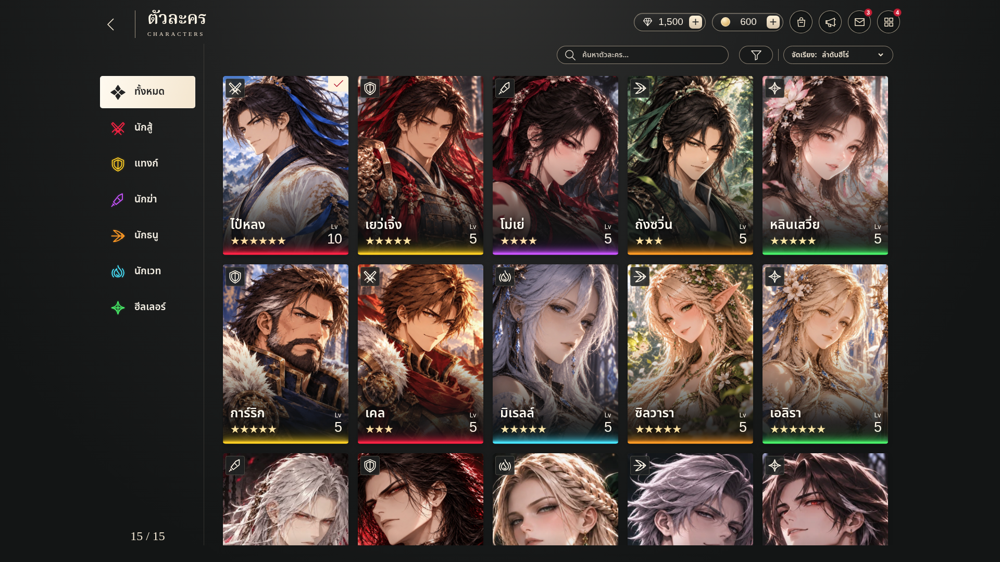
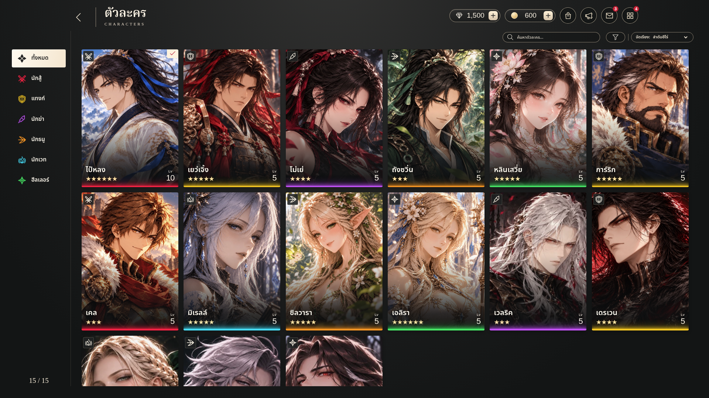

เมนูบนขนาดและตำแหน่งเดิม ย่อตัวกรองและข้อความด้านล่าง จัดการ์ด 6 ใบต่อแถวและขยายใช้พื้นที่ซ้าย–ขวา มีระยะขอบเดิม


ภาพทั้งหมดเป็น screenshot เกมจริง ไม่รีทัช ใช้เซฟ QA แยกจากผู้เล่น ตรวจทั้ง 15 ใบและการใช้งานเดิมบน Desktop 4 ขนาด เมนูบนเทียบตำแหน่งกับรายงานเดิมแล้ว
Desktop เท่านั้น · รอรีวิว · ยังไม่ merge/deploy